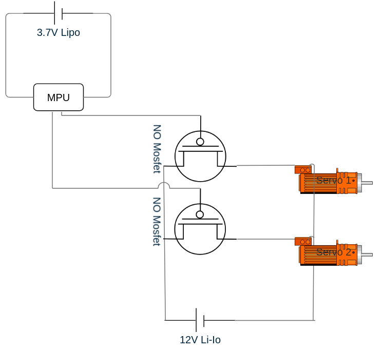

Phase II
Despin System
Since the big rocket(s) were determined to carry experiments into and through microgravity and our rockets rotate quite fast for vectorial stability, we needed a despin system to guarantee nearly-zero-g acceleration since centripetal acceleration would effectively make the flight obsolete.
The approach
The plan we came up with was to use a Microprocessor Unit (MPU) and two servo motors to turn the experiments, which would be connected to the rocket through ball bearings, reducing friction. Combining this hardware with a PID stabilization algorithm, we would be able to cancel out the rockets' own rotation. Implementing this would be a challenge, of course, but nothing that finding the right library couldn't fix.

Fig 1: Wiring diagram of despin system
Hardware failures
For the MPUs, the choice fell to the Seeed Studio XIAO ESP32S3 (not the Sense version). They are often described as reliable, robust and excellent on power requirements. Additionally, they are quite small but pack a bunch of performance, more than enough to run a PID-algorithm on. On paper, they were excellent for our use case.
For two months we worked on the circuit, which came with the challenge of providing 12 volts of battery power to the servos, using two mosfets and still keeping a small footprint with the MPU and its own battery.
At this time, the first ESP died on us. We could not figure out why, and diagnosing using the official documentation didn't help. The conclusion we reached was that we simply got unlucky and must have caught a bad chip or something. Ordering another unit of the same model, we moved on.
After the replacement arrived (it took a long time), we encountered problems with the servos as one of the seminar students accidentally soldered off the contacts on not one but two of our three servos, meaning we had one servo left.
The next MPU succumbed to a shortout caused by a faulty battery, which ultimately convinced us this was not the right path to take.
The compromise
Having wasted multiple months of time and lots of money on this system, we decided to stop with this approach. Our final solution uses a less steep angle on the engine/fin mount to reduce the rockets' centripetal acceleration combined with ball bearings connecting the experiment to further reduce the force applied to its contents.